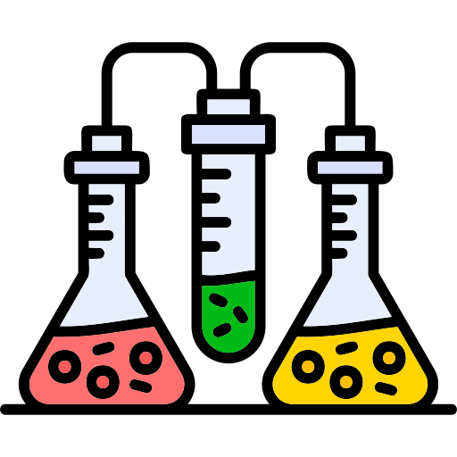

NITRILOS:Los nitrilos comenzaron a ser objeto de interés en la química en el siglo XIX.
El químico alemán August Wilhelm von Hofmann fue uno de los primeros en investigar estos compuestos en 1832,
identificando el cianuro de potasio (KCN) como un compuesto que contenía el grupo funcional -C≡N. Su trabajo
fue fundamental para sentar las bases de la comprensión de los nitrilos, incluyendo sus propiedades y reactividad
en diversas reacciones químicas. A medida que avanzaba la investigación, se reconoció que los nitrilos son
precursores valiosos en la síntesis de otros compuestos, lo que contribuyó significativamente al desarrollo de la
química orgánica.
Primeros descubrimientos de amidas
AMIDAS: El estudio de las amidas también se remonta al siglo XIX, con importantes contribuciones
del químico británico William Henry Perkin en la década de 1850. Perkin llevó a cabo investigaciones sobre la urea
y su relación con compuestos nitrogenados, logrando el aislamiento de la acetanilida, una amida derivada del ácido
acético y la anilina. Este descubrimiento fue crucial para el desarrollo de la química orgánica y sentó las bases
para el estudio de las amidas como compuestos relevantes en la biología y la farmacología. A partir de entonces,
las amidas se han vuelto esenciales en diversas aplicaciones, desde la síntesis de fármacos hasta la fabricación
de polímeros.
Evolución de sus aplicaciones industriales y científicas
NITRILOS:Desde su descubrimiento en el siglo XIX, los nitrilos han evolucionado en sus
aplicaciones industriales y científicas. Inicialmente, el cianuro de potasio se utilizó en la minería
para la extracción de metales preciosos, pero pronto se descubrieron otras aplicaciones. A lo largo del siglo XX,
los nitrilos se convirtieron en compuestos clave en la producción de fibras sintéticas, como el poliacrilonitrilo,
que es fundamental para la fabricación de ropa y alfombras
Con el tiempo, la química de los nitrilos ha permitido su uso en la síntesis de productos químicos finos y fármacos.
Por ejemplo, los nitrilos se emplean como intermediarios en la producción de pesticidas y herbicidas, así como en la síntesis
de compuestos farmacéuticos debido a su capacidad de participar en reacciones de adición y sustitución nucleofílica.
En la actualidad, la investigación en química de nitrilos sigue avanzando, explorando nuevas rutas sintéticas y aplicaciones en nanomateriales y biocompatibles.
AMIDAS:Las amidas también han experimentado un desarrollo significativo en sus aplicaciones desde el siglo XIX.
Originalmente, las amidas se estudiaron por su relación con la urea y otros compuestos nitrogenados. Con el tiempo,
se descubrió que las amidas son esenciales en la química orgánica, desempeñando un papel crucial en la síntesis de productos
farmacéuticos y agroquímicos.
En la industria, las amidas se utilizan ampliamente en la fabricación de polímeros, como el nailon y poliuretano,
que son materiales versátiles en textiles y construcción. Las amidas también son importantes en la industria de alimentos,
donde se utilizan como agentes de conservación y saborizantes.
En el ámbito científico, las amidas son fundamentales en el estudio de la biología, ya que son componentes clave de proteínas
y ácidos nucleicos. Su estabilidad química y capacidad para formar enlaces de hidrógeno las convierten en moléculas importantes
en la investigación biomédica y en el desarrollo de nuevas terapias.
Desarrollo de métodos de síntesis de nitrilos y alcoholes
AMIDAS: Una de las síntesis más utilizadas de nitrilos es la reacción de
halogenuros de alquilo con cianuro
Este método, conocido como reacción de S_N2, implica la reacción
de un halogenuro de alquilo con cianuro de sodio o cianuro de potasio, lo que produce un nitrilo.
Esta técnica es eficaz y ampliamente utilizada en la síntesis de nitrilos simples.

NITRILOS: Un método común para la síntesis de amidas es la reacción de acilo de aminas,
que implica la reacción de una amina con un ácido carboxílico o un cloruro de ácido. Este proceso resulta
en la formación de una amida y es ampliamente utilizado en la industria química debido a su eficacia y simplicidad.
Polímeros de nitrilos:El poliacrilonitrilo (PAN), desarrollado en la década de 1930,
fue el primer polímero derivado de nitrilos y revolucionó la industria textil. Su resistencia y durabilidad
lo hicieron popular en la fabricación de fibras sintéticas para ropa y alfombras. Durante la Segunda Guerra Mundial,
su uso se amplió en equipos militares y, con el tiempo, se convirtió en un material clave en la producción de envases
y componentes electrónicos.
Polímeros de amidas:El nailon, desarrollado por Wallace Carothers en la década de 1930, fue el primer polímero
de amida y tuvo un impacto significativo en la industria textil. Su introducción en la fabricación de medias de nylon ofreció una
alternativa duradera a la seda. Además, el nailon se utilizó en aplicaciones industriales, como cuerdas y componentes mecánicos,
gracias a su resistencia y versatilidad. Otros polímeros basados en amidas, como los poliuretanos, también se expandieron en diversas aplicaciones,
incluidas espumas y recubrimientos.
Principales científicos y eventos relacionados con su estudio y aplicación
NITRILOS
August Wilhelm von Hofmann: Pionero en la química orgánica, identificó el cianuro de potasio (KCN)
en 1832, estableciendo las bases para el estudio de los nitrilos.
Hermann Staudinger: Ganador del Premio Nobel de Química en 1953, investigó la naturaleza macromolecular de los polímeros,
incluyendo el poliacrilonitrilo, clave en la industria textil
Desarrollo del Poliacrilonitrilo (PAN) En la década de 1930, este polímero revolucionó la industria textil y se utilizó
en aplicaciones militares durante la Segunda Guerra Mundial.
NITRILOS
William Henry Perkin:En la década de 1850, aisló la acetanilida, importante para el estudio de las amidas.
Wallace Carothers: Desarrolló el nailon en la década de 1930, revolucionando la industria textil con fibras sintéticas.
Desarrollo de los Poliuretanos: En la década de 1940, los poliuretanos se convirtieron en importantes polímeros de amidas,
utilizados en espumas y recubrimientos.